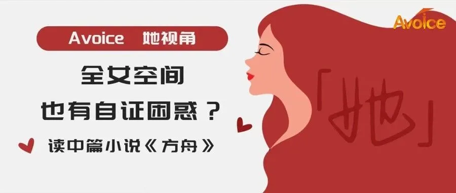
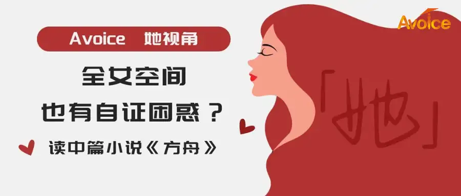
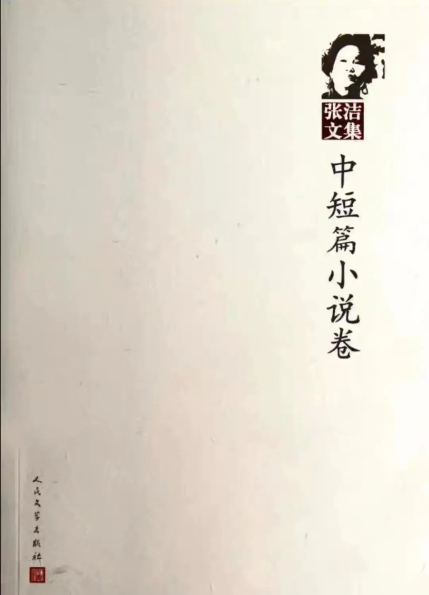
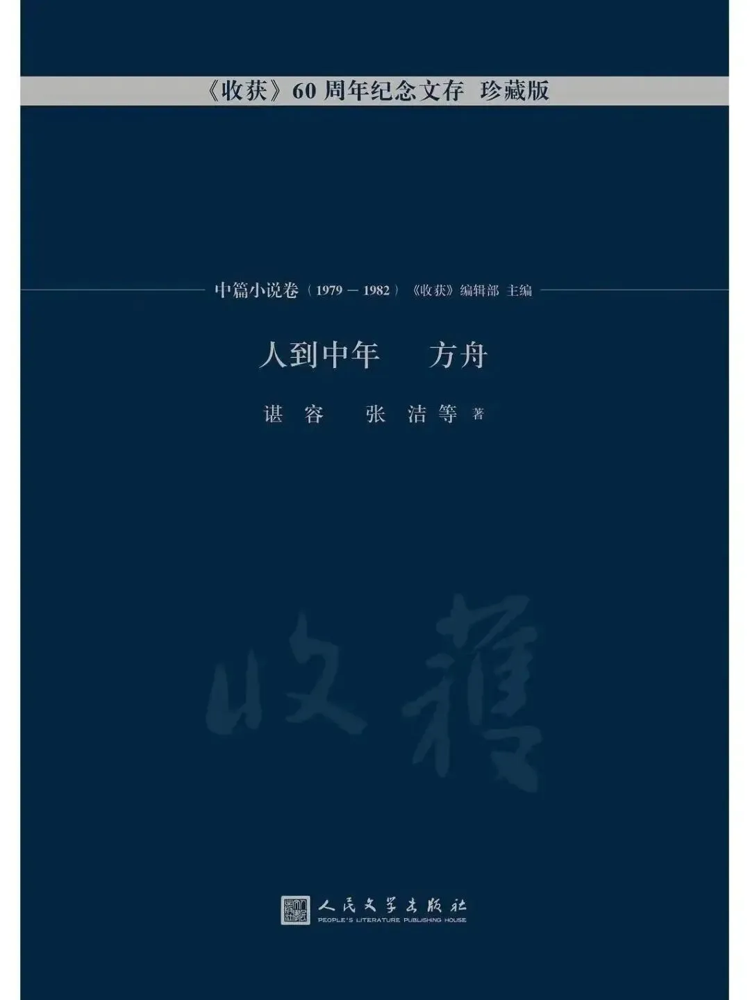
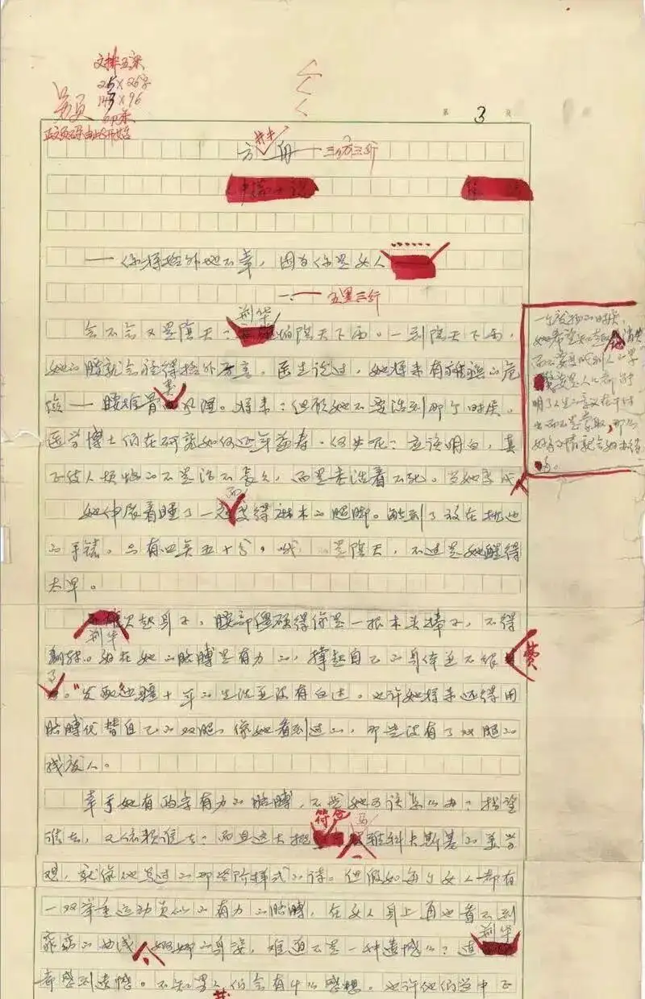

引言：
很多独身女性都曾有想要买房子，然后和同性朋友一起居住的愿望。某种程度上，这不仅为了有个地方可以遮风挡雨，更是为了在心理层面上建构独属女性的空间，以达到安全目的和舒适目的。然而迈入充斥着“爹味”的现实世界，我们不禁发问：一个理想中的“女性乌托邦”到底该以何种方式存在才能避免自证？
家庭之外的庇护所？
中篇小说《方舟》就探讨了这样的疑虑。故事讲述了三位独立的中年女性买房子之后的生活。三个人在年轻的时候是同学，中年以后选择一起居住。在相处的时间里，她们发现，原来所期的美好生活仅停于想象，所需解决的事情仍然让她们焦虑忧心。即使三人共同想出办法应对，也不过是让事态有所缓和，并不能从根本上改变现状。
她们有着各种各样的问题和困惑。姐妹间的互相理解、拥有属于自己的房子，也无法抵挡住内心对自己的怀疑。她们认识到，只要想在这个社会中好好生存，就要被父权所规定的道德标准牵制、束缚，甚至审判。即使在自己的空间领域中，女性的身份仍不能纵容她们有过多的猛烈情绪，只准压抑欲求。

但这样做无疑十分艰难，新女性迎来的挑战不只有种种的职场压力与歧视。面对家庭和事业，女性往往是需要进行取舍和退让的那方。故事中，有人进入家庭又转身离开，有人在婚姻中因为利益而拉扯，有人照顾原生家庭多一些就被说成自私......她们想逃离这样的关系，却在生命流放中不断挣扎忏悔。比如柳泉想无端发火和哭泣；梁倩时刻挂念着自己的父亲；曹荆华面临着腰痛日益严重，以后无法照料自己的事实。
而母职惩罚在本篇小说中显得尤为突出。曹荆华因为经济问题不顾丈夫反对，自行堕胎；柳泉离婚，没有条件抚养孩子；梁倩一心扑工作，没有充裕的时间。仿佛世界上母亲不该干的她们全都干了，她们在自我和孩子之间选择了前者，结果是一样的落魄。她们互相帮助、互相肯定，却也曾在无人顾得上做家务之时，感到没落不堪。这既是身份和自我主体之间切换带来的割裂，也是父权社会对职业女性的嘲讽。
无孔不入的父权制
虽然她们三人极力想构建出一个相对理想的女性空间，但是正像小说名字一样，这个所谓的“方舟”并非桃花源，它是完全流动在社会大环境中的。因此我们亦可以看到，处于外部的人对这样一群女性的凝视，以及对女性独居放大化的声讨。
邻居对她们指指点点，甚至对她们养的猫也评头论足；柳泉的上司对她见色起意，搞得她工作时不得安宁；白复山能随意进出她们的房间，只因为买房子的梁倩是正和他闹离婚的妻子；他吊着梁倩是为了他以后的发展，梁倩不和白复山离婚也是为了父亲和他战友们的面子......而表面上的女性帮助女性，比如梁倩给柳泉另谋高职，实则还是得靠着父亲的关系运作。

生活中鸡毛蒜皮的理所应当，皆脱离不开父权制的深远影响。空间之内，是身份与自我选择的拷问与挣扎；空间之外，亦有主流价值观的审判和衡量。在这样的环境下，女性怎能不对自我产生怀疑和焦虑？
难以自洽的安全感
即使小说发表于上世纪八十年代初，放至今天也仍有阅读和思考的意义。现在，女性主义盛行，互联网上的全女社群比比皆是。我们不由得沉思，只单纯地在物理层面建立全女空间就足够安全了吗？历史经验告诉我们， 倘若一个人没有独立自信的意识，就只能沦为权力的玩物。哪怕成为掌权的孤雌纯坤，也难逃权力的桎梏，最终不过是换种形式PUA，以该权力的道德限制来压榨自己和别人。
归根结底，女性安全感的缺失，来自于社会深层次的厌女。女性自小就被教育“有了男人就安全了”，而非自我身心强壮；相较之下，无论好坏，男人的行为在环境的加持里，都带有无可救药的掠夺性。面对这样的不利因素，我们似乎在不断为自己开解，在自证怪圈里深陷。比起自证不破，我们更需要建立新的自信和目标，来推倒旧有观念的藩篱。与此同时，不断地学习和成长也会提升自我价值感。我们要相信，除了英雄救美之外，肯定还有其它结局。

创造全女空间并不是最佳剧本，创造接受、支持女性独立生存状态的友好环境才是重要之处。小说结尾是寄希望于下一代男性，但与其这样，我们倒不如把希望寄托在女性自身。毕竟环境改变前，女性的勇敢自洽才是解决问题的关键。也唯有此，我们才会更有底气地去倡导发声。尽管在父权制权力体系之中，期盼有全女空间的我们很难避免自证，而坚持尤为艰难且容易反复，但庆幸的是，我们已经开始选择、尝试和行进了。
撰稿｜汀帆
审校｜Dolcia
排版/封面｜Kylin.B
图片来源｜freepik